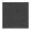

<!DOCTYPE html PUBLIC "-//W3C//DTD XHTML 1.0 Transitional//EN" "http://www.w3.org/TR/xhtml1/DTD/xhtml1-transitional.dtd">
<html xmlns="http://www.w3.org/1999/xhtml">
<head>
<meta http-equiv="Content-Type" content="text/html; charset=UTF-8" />
<title>STREAMPLAYER test page</title>
<script>!window.jQuery && document.write('<script src="http://code.jquery.com/jquery-1.4.2.min.js"><\/script>');</script>
<style type="text/css">
body {
	background-color: #191919;
	background-image:url(gfx/pagebg.jpg);
	background-position:center top;
	background-attachment:fixed;
	text-align:center;
	margin:0;
	padding:0;
	font-family:Arial, Helvetica, sans-serif;
	color:#fff;
}
div#playerPlugin {
	margin:0;
	margin-top:6em;
	padding:0;
	background:#000;
	text-align:center;
	box-shadow: 0px 0px 30px #000;
	position:relative;
	z-index:10;
}
div#controls {
	display:inline-block;
	position:relative;
	z-index:0;
	margin:auto;
	border-radius:0 0 1em 1em;
	margin-top:0;
	padding:1em;
	background:#333;
	font-family:Webdings;
	box-shadow: 0px 0px 30px #000;
}
</style>
<script type="text/javascript">

$(document).ready(function() {
	upCtrl();
	$("#controls").mouseenter(function(e) {
        downCtrl();
    });
	$("#controls").mouseleave(function(e) {
        upCtrl();
    });
	var player = document.getElementById("player");
	$("#open").click(function(e) {
        player.addItem('http://axis1.ica.vpn.av.hu/mjpg/video.mjpg');
    });
	$("#play").click(function(e) {
        player.play();
    });
	$("#stop").click(function(e) {
        player.stop();
    });
	$("#pause").click(function(e) {
        player.pause();
    });
	
	$("#stop").mouseenter(function(){
			this.html('');});
	$("#stop").mouseleave(function(){
			this.html('');});
});


function upCtrl(){
   $("#controls").animate({marginTop:-$("#controls").height()}, 400, function(){});
}

function downCtrl(){
   $("#controls").animate({marginTop:"0"}, 100, function(){});
}
</script>

</head>

<body>
<div id="playerPlugin">
  <object id="player" type="application/x-vnd.FBSPlayer" width="640" height="480">
  </object>
</div>
<div id="controls"> 
	 &nbsp;
     &nbsp; 
     &nbsp; 
     &nbsp; 
     &nbsp;
     &nbsp; 
     &nbsp; 
     &nbsp; 
    <span id="stop"></span> &nbsp; 
     
</div>
</body>
</html>
